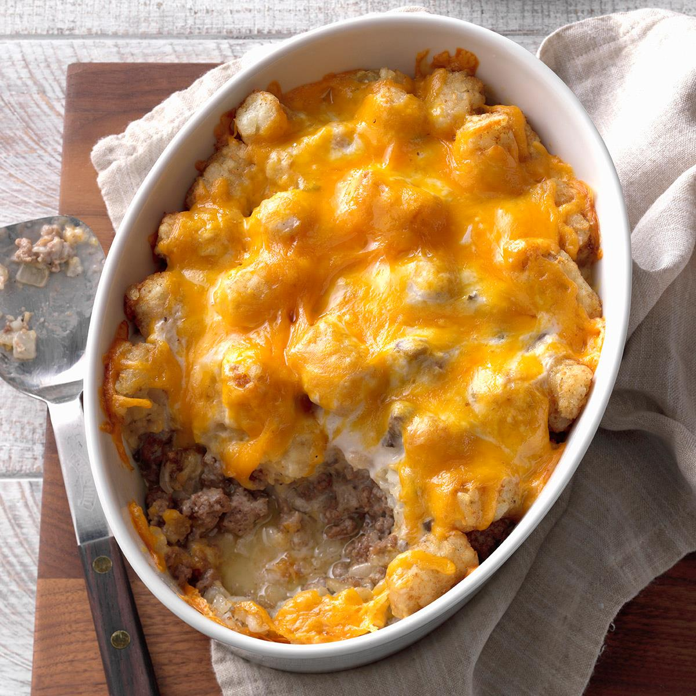

Classic Tater Tot Casserole

Description
A saucy dish filled with beef and mushrooms. Easy and quick to make, and a dish everyone is sure to love. Just follow these steps to recreate this excellent classic.
Ingredients
- 1 pound ground beef
- 1 pinch salt and ground pepper to taste
- 1 can condensed cream of mushroom soup
- 2 cups shredded cheddar cheese
- 1 package of frozen tater tots
Process
- Preheat oven to 350 degrees F (175 degrees C).
- Cook and stir ground beef in a large skillet over medium heat until no longer pink and completely browned, 7 to 10 minutes; season with salt and black pepper. Stir cream of mushroom soup into the cooked ground beef; pour the mixture into a 9x13-inch baking dish. Layer tater tots evenly over the ground beef mixture; top with Cheddar cheese.
- Bake until tater tots are golden brown and hot, 30 to 45 minutes.
Reture to homepage